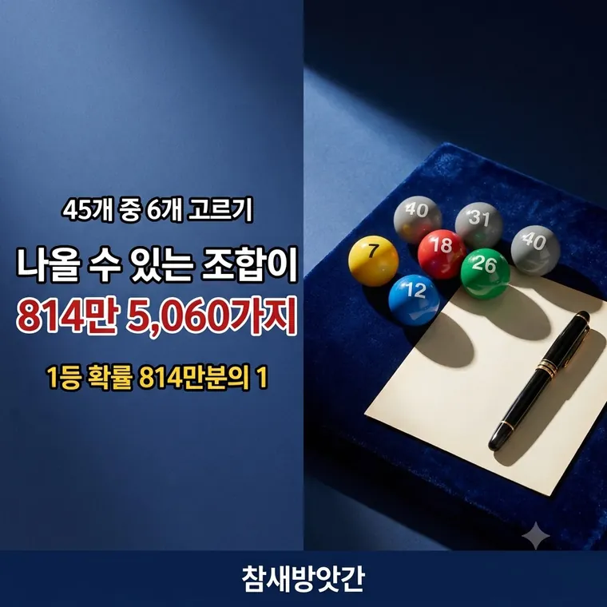

814만 5,060가지는 어떻게 나온 숫자인가
로또 1등 확률이 814만분의 1이라고 합니다. 그냥 외운 숫자가 아니라 계산해서 나온 값입니다. 어떻게 나오는지 따라가 봅니다.

먼저 순서를 따져서 세어봅니다
1부터 45까지 중에서 6개를 뽑습니다. 첫 번째 자리에 올 수 있는 숫자는 45개입니다. 하나를 뺐으니 두 번째는 44개, 그다음은 43개입니다.
이렇게 여섯 자리를 채우면 45 × 44 × 43 × 42 × 41 × 40 = 5,864,443,200가지가 나옵니다.
그런데 순서는 상관이 없습니다
로또는 1, 2, 3, 4, 5, 6을 뽑든 6, 5, 4, 3, 2, 1을 뽑든 같은 조합입니다. 그런데 위 계산에서는 둘을 따로 셌습니다.
같은 숫자 6개를 늘어놓는 방법은 6 × 5 × 4 × 3 × 2 × 1 = 720가지입니다. 그래서 720으로 나눠 중복을 걷어냅니다.
= 5,864,443,200 ÷ 720
= 8,145,060가지
수학에서는 이것을 45C6이라고 씁니다. 45개 중 6개를 순서 없이 고르는 조합의 수입니다.
한 게임을 사면 이 중 하나를 고르는 것이니, 1등 확률은 8,145,060분의 1입니다. 백분율로는 약 0.0000123%입니다.
등수별 확률
| 등수 | 조건 | 확률 | 백분율 |
|---|---|---|---|
| 1등 | 6개 일치 | 1 / 8,145,060 | 0.0000123% |
| 2등 | 5개 + 보너스 | 1 / 1,357,510 | 0.0000737% |
| 3등 | 5개 일치 | 1 / 35,724 | 0.0028% |
| 4등 | 4개 일치 | 1 / 733 | 0.136% |
| 5등 | 3개 일치 | 1 / 45 | 2.22% |
5등은 45게임에 한 번꼴입니다. 1등은 그보다 18만 배 가까이 낮습니다.
2등이 1등 다음으로 어려운 이유는 보너스 번호 하나를 더 맞춰야 하기 때문입니다. 숫자 5개를 맞춘 경우 중에서도 보너스까지 맞은 경우만 2등이 됩니다.
지난 회차는 다음 회차에 영향을 주지 않습니다
로또 추첨은 독립시행입니다. 매번 완전히 새로 시작합니다.
지난주에 나온 번호라고 이번 주에 덜 나오지 않습니다. 1년 동안 한 번도 안 나온 번호라고 더 나올 때가 된 것도 아닙니다.
공은 지난주에 무엇이 나왔는지 기억하지 못합니다. 매회 각 번호가 뽑힐 확률은 45분의 6으로 늘 같습니다.
어떤 번호가 나올지는 계산으로 알 수 없습니다. 확률 구조를 이해하는 데 참고만 하시기 바랍니다.
기댓값이라는 개념
확률론에서 기댓값은 한 번 할 때 평균적으로 돌려받는 금액을 뜻합니다.
로또 한 게임은 1,000원입니다. 그런데 판매액 중 당첨금으로 돌아가는 비율은 법으로 약 50%로 정해져 있습니다. 나머지는 복권기금과 운영비로 쓰입니다.
그래서 1,000원짜리 한 게임의 기댓값은 500원 안팎입니다. 길게 보면 산 돈의 절반쯤이 돌아오는 구조라는 뜻입니다.
자주 묻는 질문
45개 중 6개를 순서대로 뽑는 경우의 수 5,864,443,200을 6개를 늘어놓는 방법의 수 720으로 나눈 값입니다. 로또는 뽑는 순서를 따지지 않기 때문에 중복을 걷어내는 것입니다.
그렇지 않습니다. 로또 추첨은 매회 독립적으로 이루어지므로 이전 결과가 다음 추첨에 영향을 주지 않습니다. 각 번호가 뽑힐 확률은 언제나 45분의 6으로 같습니다.
약 45분의 1, 백분율로는 약 2.22%입니다. 평균적으로 45게임에 한 번꼴로 숫자 3개가 맞는다는 뜻입니다.
약 500원입니다. 한 게임 가격은 1,000원이지만 판매액 중 당첨금으로 배분되는 비율이 법으로 약 50% 수준으로 정해져 있기 때문입니다.